Brand · Spatial
CATCHU 喵一眼 —— 貓咪博物館裡的咖啡廳
A cat-themed café inside a cat museum, for people who came to see the museum and people who came for the cats. A corridor runs through it showing how cats live and how we live — the café is where the two rest in the same room. 貓咪博物館中的貓咪主題品牌咖啡廳,給喜愛毛小孩及來參觀博物館的人參觀, 透過通道來展示人與貓的生活型態差異,並結合咖啡廳創造人貓的休憩空間。
- Type
- Brand design · Spatial design
- Team
- Student project — 賴亭諭、黃建銘
- Advisors
- 謝修璟、謝子良
- Drawings
- 1F, 2F and rooftop plans, four elevations, two sections
- 1入口處
- 2點餐區
- 3貓咪旅館與遊樂區
- 4男女洗手間
- 5長椅沙發區
- 6圓桌區
- 7戶外遊樂區
- 8表演區
- 9裝飾座位區
- 10U 形樓梯
Brand 品牌
The Chinese name is bent out of the sound of museum — 喵一眼, a glance with a meow in it. The English, CATCHU, is meant to catch your eye. The mark is a cat sitting in a coffee cup, head over the rim. 運用博物館的諧音 MUSEUM 發想出與貓咪連結的喵一眼咖啡, 英文 CATCHU 則想用設計抓住客人眼睛。LOGO 的部分則用貓咪泡在咖啡杯探頭搭配標準字顏色設計, 給人討喜、可愛的感覺。
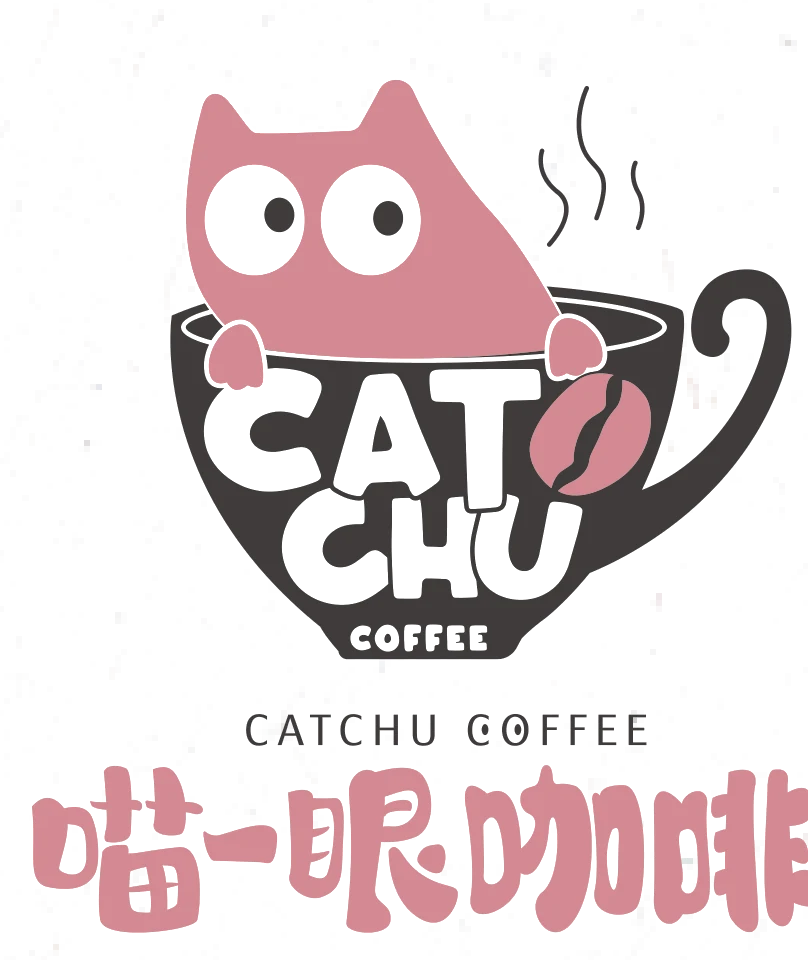
- C 18 M 55 Y 30 K 0
- C 1 M 2 Y 12 K 0
- C 0 M 0 Y 0 K 90
期許踏入咖啡廳的每一位客人, 在繁忙的步調中也能喵一眼生活中周遭的事物,得到身心靈上的療癒。 catch your eyes.
Space 場域
A long, narrow site on three levels. Order at the counter, walk the corridor past the cat hotel, sit at the round tables or out on the terrace; the roof is laid with grass. 基地是長條形、共三層。從入口點餐開始,穿過貓咪旅館與遊樂區, 可以坐在圓桌區或戶外;頂樓鋪的是草皮座位區。
- 1商品區
- 2長桌區
- 3貓咪介紹牆
- 4食品製作區
- 5樓中樓用餐區
- 6戶外用餐區
- 7出口區
- 8草皮座位區
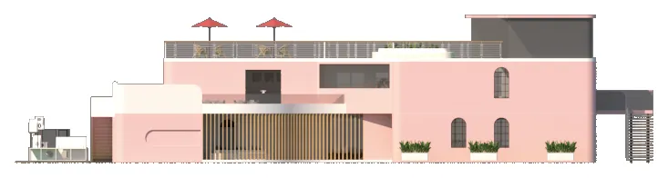
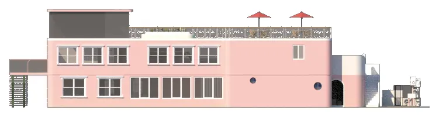
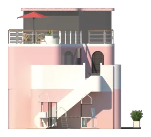
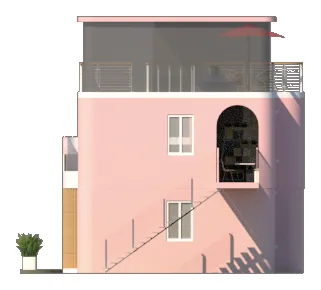
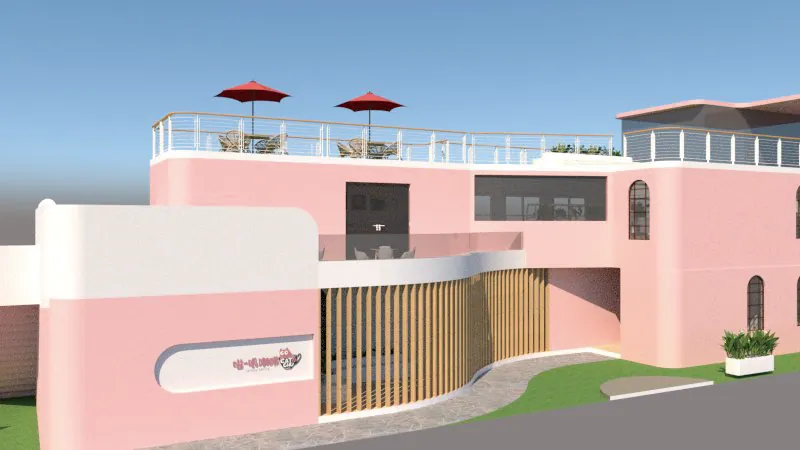
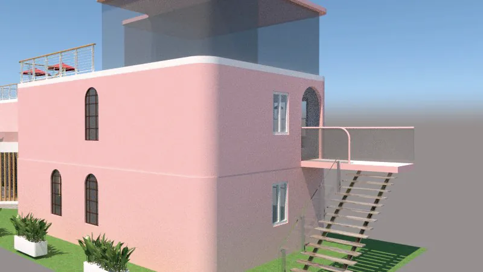
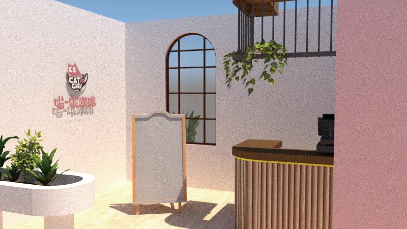
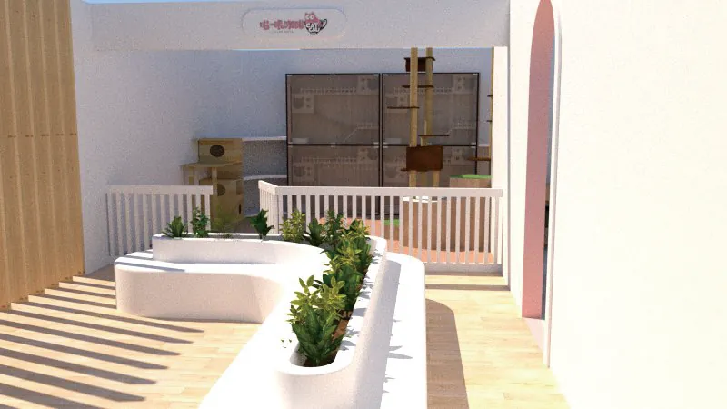
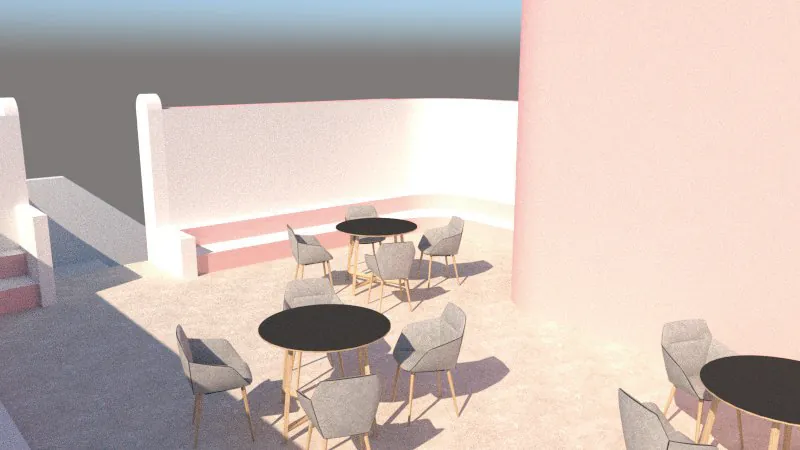
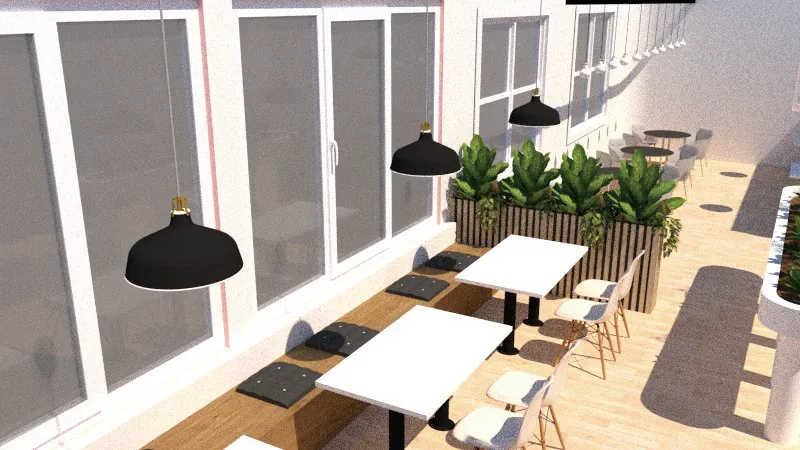
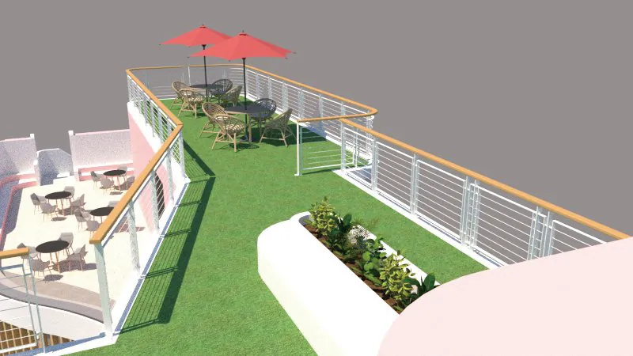